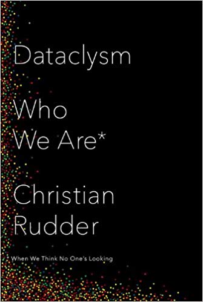
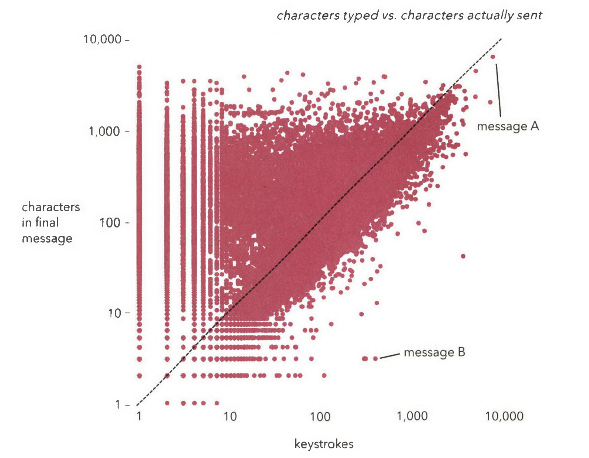
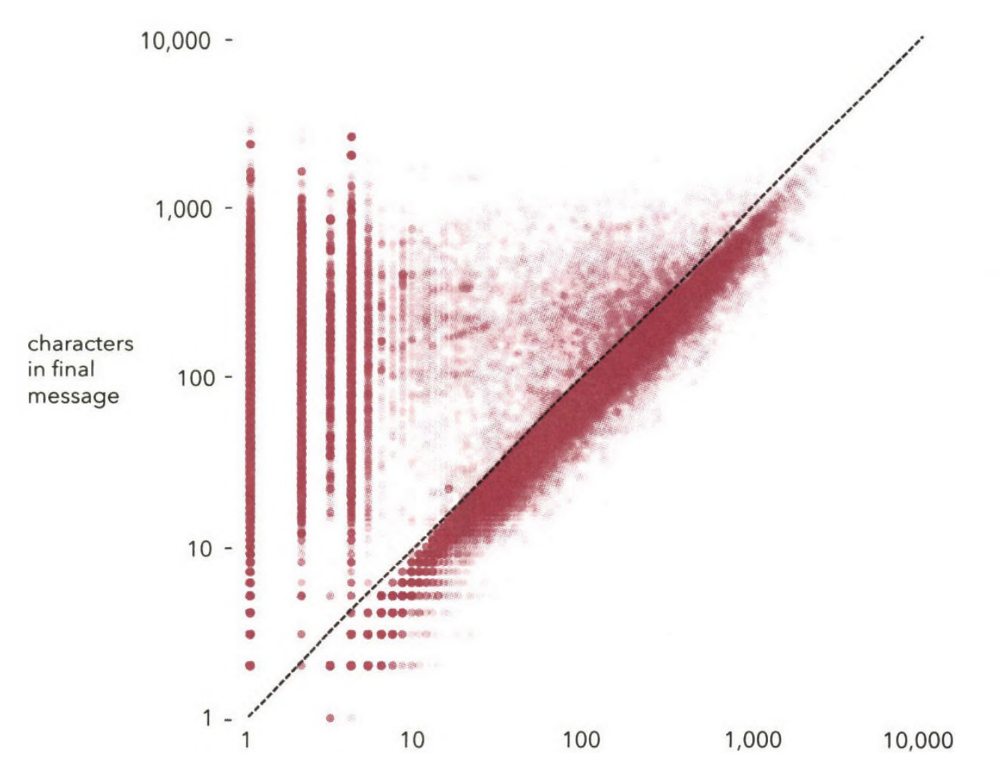
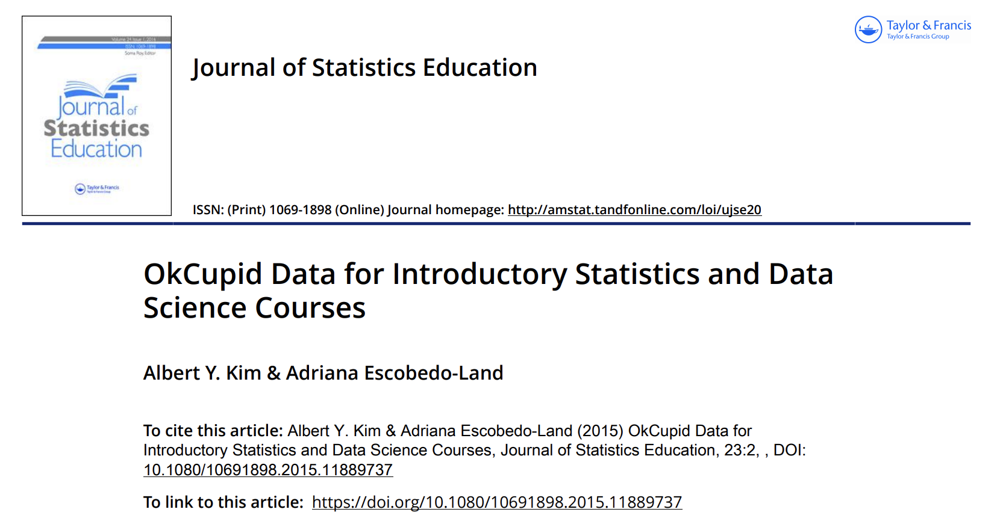
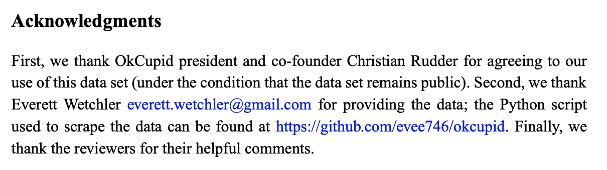

 
In the chart, the message A took 76minutes to author (source: dataclysm book)

The previous graph suffers from overplotting, making it difficult to appreciate how many datapoints share the same property. A nice way to make such information visible is to have semi-transparent data points, so we see where several points are overlaid.
"To show [a certain] finding, we'll have to go on a short mathematical journey. These kinds of exercises are what make data science work. To put together puzzles, you have to lay out all the pieces and then just start trying things. In the absence of careful sifting, reduction, and parsimony, very little just “jumps out at you from terabytes of raw data."
Can we use the data?
We need to check the terms online. See OkCupid terms page. See the details of the available data (R package, github repo)
Create a new jupyter notebook for performing exploratory data analysis
See the notebook created in class with additional comments
 
Source: OkCupid Data for Introductory Statistics and Data Science Courses (A. Kim, A. Escobedo-Land)
In the following example, is the data about this OkCupid profile truthful or dubious?
df = pd.read_csv('data/profiles.csv')
df.loc[df['age'] == 109]
In the following example, the profile is incomplete, resulting in data missing for analysis:
df.loc[df['age'] == 110]
We can do an interesting thought-experiment by asking “what is the hybrid of the most frequent value (i.e. mode) of each user-variable?”
Hint: Compute, for each column, the value corresponding the most frequencly occurring (mode) of that set.